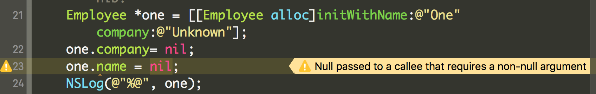
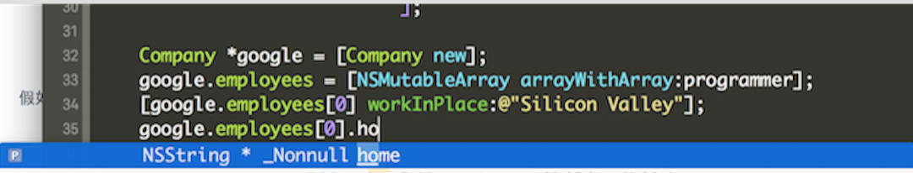
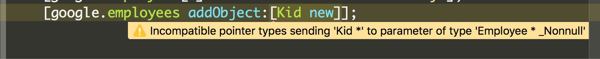
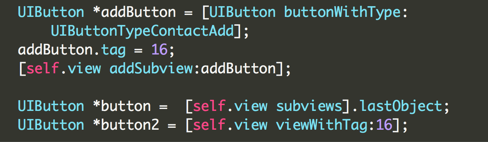

<!doctype html>


  


<html class="theme-next pisces use-motion">
<head>
  <meta charset="UTF-8"/>
<meta http-equiv="X-UA-Compatible" content="IE=edge,chrome=1" />
<meta name="viewport" content="width=device-width, initial-scale=1, maximum-scale=1"/>


<meta http-equiv="Cache-Control" content="no-transform" />
<meta http-equiv="Cache-Control" content="no-siteapp" />


  
  
  <link href="/vendors/fancybox/source/jquery.fancybox.css?v=2.1.5" rel="stylesheet" type="text/css" />


  
  
  
  

  
    
    
  

  

  

  

  

  
    
    
    <link href="//fonts.googleapis.com/css?family=Lato:300,300italic,400,400italic,700,700italic&subset=latin,latin-ext" rel="stylesheet" type="text/css">
  


<link href="/vendors/font-awesome/css/font-awesome.min.css?v=4.4.0" rel="stylesheet" type="text/css" />

<link href="/css/main.css?v=5.0.1" rel="stylesheet" type="text/css" />


  <meta name="keywords" content="iOS," />


  <link rel="shortcut icon" type="image/x-icon" href="/favicon.ico?v=5.0.1" />


<meta name="description" content="前言自从苹果在WWDC2014上推出Swift语言后,国外iOS开发社区纷纷转向苹果推崇的iOS开发语言新贵. 而由于Swift语言存在时间不长,其所对应的iOS开源库远不及Objective-C的开源库多,因此在iOS平台开发语言的过渡中,Objective-C与Swift混编的项目也越来越多,而为了能让Objective-C和Swift更安全地兼容在iOS应用中,苹果不断优化Xcode编译器L">
<meta property="og:type" content="article">
<meta property="og:title" content="Swift时代下的Objective-C新特性">
<meta property="og:url" content="http://www.yoursite.com/2016/08/21/2016-08-21/index.html">
<meta property="og:site_name" content="One Word">
<meta property="og:description" content="前言自从苹果在WWDC2014上推出Swift语言后,国外iOS开发社区纷纷转向苹果推崇的iOS开发语言新贵. 而由于Swift语言存在时间不长,其所对应的iOS开源库远不及Objective-C的开源库多,因此在iOS平台开发语言的过渡中,Objective-C与Swift混编的项目也越来越多,而为了能让Objective-C和Swift更安全地兼容在iOS应用中,苹果不断优化Xcode编译器L">
<meta property="og:image" content="http://www.yoursite.com/media/screenshot-1.png">
<meta property="og:image" content="http://www.yoursite.com/media/screenshot-2.png">
<meta property="og:image" content="http://www.yoursite.com/media/screenshot-3.png">
<meta property="og:image" content="http://www.yoursite.com/media/screenshot-4.png">
<meta property="og:updated_time" content="2016-09-03T11:56:54.000Z">
<meta name="twitter:card" content="summary">
<meta name="twitter:title" content="Swift时代下的Objective-C新特性">
<meta name="twitter:description" content="前言自从苹果在WWDC2014上推出Swift语言后,国外iOS开发社区纷纷转向苹果推崇的iOS开发语言新贵. 而由于Swift语言存在时间不长,其所对应的iOS开源库远不及Objective-C的开源库多,因此在iOS平台开发语言的过渡中,Objective-C与Swift混编的项目也越来越多,而为了能让Objective-C和Swift更安全地兼容在iOS应用中,苹果不断优化Xcode编译器L">
<meta name="twitter:image" content="http://www.yoursite.com/media/screenshot-1.png">


<script type="text/javascript" id="hexo.configuration">
  var NexT = window.NexT || {};
  var CONFIG = {
    scheme: 'Pisces',
    sidebar: {"position":"left","display":"always"},
    fancybox: true,
    motion: true,
    duoshuo: {
      userId: 0,
      author: '博主'
    }
  };
</script>


  <link rel="canonical" href="http://www.yoursite.com/2016/08/21/2016-08-21/"/>

  <title> Swift时代下的Objective-C新特性 | One Word </title>
</head>

<body itemscope itemtype="http://schema.org/WebPage" lang="zh-Hans">

  


  <script type="text/javascript">
    var _hmt = _hmt || [];
    (function() {
      var hm = document.createElement("script");
      hm.src = "//hm.baidu.com/hm.js?3c396973af53afd346011bcf3bf4af43";
      var s = document.getElementsByTagName("script")[0];
      s.parentNode.insertBefore(hm, s);
    })();
  </script>


  
  
    
  

  <div class="container one-collumn sidebar-position-left page-post-detail ">
    <div class="headband"></div>

    <header id="header" class="header" itemscope itemtype="http://schema.org/WPHeader">
      <div class="header-inner"><div class="site-meta ">
  

  <div class="custom-logo-site-title">
    <a href="/"  class="brand" rel="start">
      <span class="logo-line-before"><i></i></span>
      <span class="site-title">One Word</span>
      <span class="logo-line-after"><i></i></span>
    </a>
  </div>
  <p class="site-subtitle">Never too old to learn.</p>
</div>

<div class="site-nav-toggle">
  <button>
    <span class="btn-bar"></span>
    <span class="btn-bar"></span>
    <span class="btn-bar"></span>
  </button>
</div>

<nav class="site-nav">
  

  
    <ul id="menu" class="menu">
      
        
        <li class="menu-item menu-item-home">
          <a href="/" rel="section">
            
              <i class="menu-item-icon fa fa-fw fa-home"></i> <br />
            
            首页
          </a>
        </li>
      
        
        <li class="menu-item menu-item-tags">
          <a href="/tags" rel="section">
            
              <i class="menu-item-icon fa fa-fw fa-tags"></i> <br />
            
            标签
          </a>
        </li>
      
        
        <li class="menu-item menu-item-categories">
          <a href="/categories" rel="section">
            
              <i class="menu-item-icon fa fa-fw fa-th"></i> <br />
            
            分类
          </a>
        </li>
      
        
        <li class="menu-item menu-item-archives">
          <a href="/archives" rel="section">
            
              <i class="menu-item-icon fa fa-fw fa-archive"></i> <br />
            
            归档
          </a>
        </li>
      

      
    </ul>
  

  
</nav>

 </div>
    </header>

    <main id="main" class="main">
      <div class="main-inner">
        <div class="content-wrap">
          <div id="content" class="content">
            

  <div id="posts" class="posts-expand">
    

  
  

  
  
  

  <article class="post post-type-normal " itemscope itemtype="http://schema.org/Article">

    
      <header class="post-header">

        
        
          <h1 class="post-title" itemprop="name headline">
            
            
              
                Swift时代下的Objective-C新特性
              
            
          </h1>
        

        <div class="post-meta">
          <span class="post-time">
            <span class="post-meta-item-icon">
              <i class="fa fa-calendar-o"></i>
            </span>
            <span class="post-meta-item-text">发表于</span>
            <time itemprop="dateCreated" datetime="2016-08-21T10:38:10+08:00" content="2016-08-21">
              2016-08-21
            </time>
          </span>

          
            <span class="post-category" >
              &nbsp; | &nbsp;
              <span class="post-meta-item-icon">
                <i class="fa fa-folder-o"></i>
              </span>
              <span class="post-meta-item-text">分类于</span>
              
                <span itemprop="about" itemscope itemtype="https://schema.org/Thing">
                  <a href="/categories/programming/" itemprop="url" rel="index">
                    <span itemprop="name">编程</span>
                  </a>
                </span>

                
                

              
            </span>
          

          
            
              <span class="post-comments-count">
                &nbsp; | &nbsp;
                <a href="/2016/08/21/2016-08-21/#comments" itemprop="discussionUrl">
                  <span class="post-comments-count ds-thread-count" data-thread-key="2016/08/21/2016-08-21/" itemprop="commentsCount"></span>
                </a>
              </span>
            
          

          

          
          

          
        </div>
      </header>
    


    <div class="post-body" itemprop="articleBody">

      
      

      
        <h2 id="前言"><a href="#前言" class="headerlink" title="前言"></a>前言</h2><p>自从苹果在WWDC2014上推出Swift语言后,国外iOS开发社区纷纷转向苹果推崇的iOS开发语言新贵. 而由于Swift语言存在时间不长,其所对应的iOS开源库远不及Objective-C的开源库多,因此在iOS平台开发语言的过渡中,Objective-C与Swift混编的项目也越来越多,而为了能让Objective-C和Swift更安全地兼容在iOS应用中,苹果不断优化Xcode编译器LLVM,为Objective-C语言增加了不少新特性,使其桥接到Swift代码时更加安全.</p>
<p>接下来就来看看Swift出现之后的这些Objective-C新特性,以及如何更好应用到自己的Objective-C代码中吧<em>(下文都以OC简称)</em>.</p>
<ul>
<li>Objective-C新增的Nullability声明</li>
<li>数组,字典等集合类的轻量级泛型声明</li>
<li>Objective-C 类属性的使用</li>
</ul>
<h2 id="Objective-C新增的Nullability声明"><a href="#Objective-C新增的Nullability声明" class="headerlink" title="Objective-C新增的Nullability声明"></a>Objective-C新增的Nullability声明</h2><p>针对引用对象,OC语言都将其可以设置nil,而常常对nil的对象访问和调用方法时会就出现问题,严重地还会直接造成应用Crash; 而Swift为引用对象引入Optional类型的概念,只有Optional类型的对象才能被设置为nil,否则就会编译为类型错误,当对Optional类型的对象为nil值的情况下仍强行访问该对象就会导致程序的Crash,也就是强制解包Opional类型对象值为nil的情况,这也是写Swift代码中要极力避免的.</p>
<p>为了保证OC程序的安全性以及更安全地向Swift进行桥接,OC出现nonnull,_Nonnull和nullable,_Nullable等一系列Nullability关键字,而这也对应在Swift中表示了非Optional和Optional的对象.现在(<code>Xcode 7之后</code>)无论声明属性还是声明变量,使用新增的这几个关键字,就能显示告诉编译器哪个对象可以被赋为nil,哪个不能被赋值为nil.</p>
<p>首先来看看是使用在代码中使用这些关键字的吧.</p>
<figure class="highlight objectivec"><table><tr><td class="gutter"><pre><span class="line">1</span><br><span class="line">2</span><br><span class="line">3</span><br><span class="line">4</span><br><span class="line">5</span><br><span class="line">6</span><br><span class="line">7</span><br></pre></td><td class="code"><pre><span class="line"><span class="class"><span class="keyword">@interface</span> <span class="title">Employee</span> : <span class="title">NSObject</span></span></span><br><span class="line"><span class="keyword">@property</span> (nonnull, <span class="keyword">nonatomic</span>, <span class="keyword">copy</span>)<span class="built_in">NSString</span> *name;</span><br><span class="line"><span class="keyword">@property</span> (nullable, <span class="keyword">nonatomic</span>, <span class="keyword">copy</span>)<span class="built_in">NSString</span> *company;</span><br><span class="line"></span><br><span class="line">- (<span class="keyword">void</span>)workInPlace:(<span class="built_in">NSString</span> * _Nonnull)place;</span><br><span class="line">- (nullable instancetype)initWithName:(<span class="built_in">NSString</span> * _Nonnull)name company:(<span class="built_in">NSString</span> * _Nullable)company;</span><br><span class="line"><span class="keyword">@end</span></span><br></pre></td></tr></table></figure>
<p>这里nonnull和nullable是针对属性,返回值声明Nullability的关键字,声明时与nonatomic和copy一样都为属性的修饰符;而_Nonnull和_Nullable是针对局部变量, 参数变量来声明时使用的,注意的是该类关键字<strong>声明顺序一定要在指针符号<code>*</code>的后面</strong>, 否则编译器无法识别该关键字.</p>
<a id="more"></a>
<p>这样声明后一旦声明了nonull/_Nullable的属性被赋值为nil时,编译器就给警告提示,告诉开发者哪些变量属性被要求不能传nill.借此,我们可以对明确清楚不会为nil的对象使用该关键字,来可以更加保证程序的安全性以及语言规范.<br></p>
<p>除此之外,属性除了设置nonnull和nullable外,还提供<code>null_resettable</code>关键字,而这个是用来表示该属性在setter时可设为nil,而在getter时是不为nil的,比如UIViewController的View视图就是用这个关键字声明的.当控制器的view被设置为nil时,使用getter方法访问就会触发<code>loadView</code>方法,创建一个视图对象返回.</p>
<figure class="highlight objectivec"><table><tr><td class="gutter"><pre><span class="line">1</span><br></pre></td><td class="code"><pre><span class="line"><span class="keyword">@property</span>(null_resettable, <span class="keyword">nonatomic</span>,<span class="keyword">strong</span>) <span class="built_in">UIView</span> *view;</span><br></pre></td></tr></table></figure>
<p>有了Nullability关键字声明后,官方推荐将属性尽可能声明为nonnull,少量根据需要设置为nullable,并且现在系统SDK也是这么做的,只不过将大量属性都添加声明nonnull时显得十分麻烦,官方巧妙地提供一对宏NS_ASSUME_NONNULL_BEGIN和NS_ASSUME_NONNULL_END,来表示默认两个宏之间的属性声明都为nonnull,若需要额外声明为nullable的属性直接进行声明为<code>nullable</code>,覆盖宏默认提供的nonnull声明.而使用宏之后对nonnull修饰的属性设置nil时也一样会警告提示的作用.</p>
<figure class="highlight objectivec"><table><tr><td class="gutter"><pre><span class="line">1</span><br><span class="line">2</span><br><span class="line">3</span><br><span class="line">4</span><br><span class="line">5</span><br><span class="line">6</span><br><span class="line">7</span><br><span class="line">8</span><br><span class="line">9</span><br><span class="line">10</span><br><span class="line">11</span><br></pre></td><td class="code"><pre><span class="line"><span class="built_in">NS_ASSUME_NONNULL_BEGIN</span></span><br><span class="line"><span class="class"><span class="keyword">@interface</span> <span class="title">Employee</span> : <span class="title">NSObject</span></span></span><br><span class="line"><span class="keyword">@property</span> (<span class="keyword">nonatomic</span>, <span class="keyword">copy</span>)<span class="built_in">NSString</span> *name;</span><br><span class="line"><span class="keyword">@property</span> (<span class="keyword">nonatomic</span>, <span class="keyword">copy</span>)<span class="built_in">NSString</span> *home;</span><br><span class="line"><span class="keyword">@property</span> (<span class="keyword">nonatomic</span>, <span class="keyword">copy</span>)<span class="built_in">NSString</span> *skill;</span><br><span class="line"><span class="keyword">@property</span> (nullable, <span class="keyword">nonatomic</span>, <span class="keyword">copy</span>)<span class="built_in">NSString</span> *company;</span><br><span class="line"></span><br><span class="line">- (<span class="keyword">void</span>)workInPlace:(<span class="built_in">NSString</span> * _Nonnull)place;</span><br><span class="line">- (nonnull instancetype)initWithName:(<span class="built_in">NSString</span> * _Nonnull)name company:(<span class="built_in">NSString</span> * _Nullable)company;</span><br><span class="line"><span class="keyword">@end</span></span><br><span class="line"><span class="built_in">NS_ASSUME_NONNULL_END</span></span><br></pre></td></tr></table></figure>
<p><br></p>
<h2 id="集合类的轻量级泛型声明"><a href="#集合类的轻量级泛型声明" class="headerlink" title="集合类的轻量级泛型声明"></a>集合类的轻量级泛型声明</h2><p>Xcode 7之后由于编译器LLVM7.0的升级支持,在集合相关的声明和使用上,如NSArray,NSDictionary等提供了轻量泛型的新语法,这样使用集合对象,而从该集合里取出的对象类型也不再是id, 而是具体的对象类型.</p>
<figure class="highlight objc"><table><tr><td class="gutter"><pre><span class="line">1</span><br><span class="line">2</span><br><span class="line">3</span><br><span class="line">4</span><br><span class="line">5</span><br><span class="line">6</span><br><span class="line">7</span><br><span class="line">8</span><br><span class="line">9</span><br><span class="line">10</span><br></pre></td><td class="code"><pre><span class="line"><span class="comment">//局部变量声明</span></span><br><span class="line"><span class="built_in">NSArray</span>&lt;Employee *&gt; *programmer = @[</span><br><span class="line">							[[Employee alloc]initWithName:<span class="string">@"A"</span> company:<span class="literal">nil</span>],</span><br><span class="line">							[[Employee alloc]initWithName:<span class="string">@"B"</span> company:<span class="literal">nil</span>],</span><br><span class="line">							[[Employee alloc]initWithName:<span class="string">@"C"</span> company:<span class="literal">nil</span>],</span><br><span class="line">							[[Employee alloc]initWithName:<span class="string">@"D"</span> company:<span class="literal">nil</span>],							</span><br><span class="line">							];</span><br><span class="line"></span><br><span class="line"><span class="comment">// 属性声明</span></span><br><span class="line"><span class="keyword">@property</span> (<span class="keyword">nonatomic</span>, <span class="keyword">strong</span>) <span class="built_in">NSMutableArray</span>&lt;Employee *&gt; *employees</span><br></pre></td></tr></table></figure>
<p>由于明确知道了集合内部元素的对象类型,系统还提供了该对象所属类的相关属性和方法的代码提示,这样就方便直接使用该对象.这样一来不但更加明确代码的语义,让开发者看见集合声明就能明白内部的对象类型,而且减少了id出现,避免重复的id类型显示转换操作以及访问id类型对象的安全问题,可谓是一举多得.<br><br>使用了轻量泛型特性的集合对象在添加其他类型的对象时,就会引起编译器的警告,来提示开发者传的参数类型不一致: 你真的打算把这个对象放入这个集合吗???<br>  </p>
<p>轻量泛型的语法还提供一个比较有用的修饰符:<strong>__kindof</strong>,在官方SDK中不少用到了这个新修饰符,首先看看系统是如何声明使用它的.</p>
<figure class="highlight objc"><table><tr><td class="gutter"><pre><span class="line">1</span><br><span class="line">2</span><br><span class="line">3</span><br></pre></td><td class="code"><pre><span class="line"><span class="comment">// UIView.h</span></span><br><span class="line"><span class="keyword">@property</span>(<span class="keyword">nonatomic</span>,<span class="keyword">readonly</span>,<span class="keyword">copy</span>) <span class="built_in">NSArray</span>&lt;__kindof <span class="built_in">UIView</span> *&gt; *subviews;</span><br><span class="line">- (nullable __kindof <span class="built_in">UIView</span> *)viewWithTag:(<span class="built_in">NSInteger</span>)tag;</span><br></pre></td></tr></table></figure>
<p>这样声明之后, 无论从属性还是方法获得的对象都会得到与该类型相关的子类或者就是该类型,对应上面就是UIView类型或者其子类,而不再是以前的id类型,这样避免了不必要的显示类型转换,直接访问也不会任何类型警告,这一优点用在UITableview的<code>dequeueReusableCellWithIdentifier:</code>方法上更加明显.<br></p>
<p><br></p>
<h2 id="Objective-C-类属性的使用"><a href="#Objective-C-类属性的使用" class="headerlink" title="Objective-C 类属性的使用"></a>Objective-C 类属性的使用</h2><p>在OC中,我们都会将有重要的成员变量作为属性声明来使用,而Xcode 8之后<em>(目前Xcode8还是测试版本)</em>为OC提供支持类属性的声明和使用,并且与Swift混编时该属性桥接成Swift的类属性.<em>(比较坑的是: 光声明了类属性后,编译器并不会去自动生成setter和getter方法,这些方法都需要开发者自己实现)</em><br>首先声明类属性时,需要添加上class关键字修饰该属性,接下来就是在.m文件进行setter和getter方法的实现了.</p>
<figure class="highlight objc"><table><tr><td class="gutter"><pre><span class="line">1</span><br><span class="line">2</span><br><span class="line">3</span><br></pre></td><td class="code"><pre><span class="line"><span class="class"><span class="keyword">@interface</span> <span class="title">User</span> : <span class="title">NSObject</span></span></span><br><span class="line"><span class="keyword">@property</span> (class, <span class="keyword">nonatomic</span>, <span class="keyword">assign</span>, <span class="keyword">readonly</span>) <span class="built_in">NSInteger</span> userCount;</span><br><span class="line"><span class="keyword">@end</span></span><br></pre></td></tr></table></figure>
<figure class="highlight objc"><table><tr><td class="gutter"><pre><span class="line">1</span><br><span class="line">2</span><br><span class="line">3</span><br><span class="line">4</span><br><span class="line">5</span><br><span class="line">6</span><br><span class="line">7</span><br><span class="line">8</span><br><span class="line">9</span><br><span class="line">10</span><br></pre></td><td class="code"><pre><span class="line"><span class="class"><span class="keyword">@implementation</span> <span class="title">User</span></span></span><br><span class="line"><span class="keyword">static</span> <span class="built_in">NSInteger</span> _userCount = <span class="number">1</span>;</span><br><span class="line"></span><br><span class="line">+ (<span class="built_in">NSInteger</span>)userCount &#123;</span><br><span class="line">  <span class="keyword">return</span> _userCount;</span><br><span class="line">&#125;</span><br><span class="line"></span><br><span class="line">+ (<span class="keyword">void</span>)setUserCount:(<span class="built_in">NSInterger</span>)userCount &#123;</span><br><span class="line">	_userCount = userCount;</span><br><span class="line">&#125;</span><br></pre></td></tr></table></figure>
<p>由于类对象的特殊性,其setter和getter方法本质就是类方法,就直接无法使用成员变量,因此只能在类中用static声明对应属性的全局变量,只初始化一次,来保证类属性值生命周期.<br>在通过类属性的声明以及setter和getter方法的实现后,我们就可以向像Swift一样使用点语法访问类属性了.<em>(分明是向Swift靠拢…)</em></p>
<figure class="highlight plain"><table><tr><td class="gutter"><pre><span class="line">1</span><br><span class="line">2</span><br><span class="line">3</span><br><span class="line">4</span><br></pre></td><td class="code"><pre><span class="line">int main(int argc, char * argv[]) &#123;</span><br><span class="line">	[User setUserCount: 2];</span><br><span class="line">	NSLog(@&quot;User count: %ld&quot;,(long)User.userCount); // 2</span><br><span class="line">&#125;</span><br></pre></td></tr></table></figure>
<h2 id="小结"><a href="#小结" class="headerlink" title="小结"></a>小结</h2><p>自Swift发布之后,苹果官方不断改建这个新语言的同时,为了让原有大量的OC项目能够更好向Swift方向迁移,在编译器优化上提供越来越多的特性来帮助OC程序更加安全,有效地桥接到Swift项目上,而利用这些新的特性,不但可以帮助OC程序员更无痛地迁移到Swift中去,而且也更是让我们加强在OC编程中对类型安全的重视,尝试写出更安全,可读性更高的OC代码.</p>
<p><br></p>
<h2 id="参考资料"><a href="#参考资料" class="headerlink" title="参考资料"></a>参考资料</h2><p><a href="http://useyourloaf.com/blog/using-nullable-to-annotate-objective-c/" target="_blank" rel="external">Using nullable to annotate Objective-C code</a><br><a href="http://blog.sunnyxx.com/2015/06/12/objc-new-features-in-2015/" target="_blank" rel="external">2015 Objective-C 新特性</a><br><a href="https://developer.apple.com/videos/play/wwdc2016/405" target="_blank" rel="external">WWDC 2016 Session 405 What’s New in LLVM</a></p>

      
    </div>

    <div>
      
        
      
    </div>

    <div>
      
        

      
    </div>

    <footer class="post-footer">
      
        <div class="post-tags">
          
            <a href="/tags/iOS/" rel="tag">#iOS</a>
          
        </div>
      

      
        <div class="post-nav">
          <div class="post-nav-next post-nav-item">
            
              <a href="/2016/07/25/0804/" rel="next" title="View Controller Programming Guide For iOS (一)">
                <i class="fa fa-chevron-left"></i> View Controller Programming Guide For iOS (一)
              </a>
            
          </div>

          <div class="post-nav-prev post-nav-item">
            
              <a href="/2016/08/28/WWDC之优化App启动速度/" rel="prev" title="WWDC之优化App启动速度">
                WWDC之优化App启动速度 <i class="fa fa-chevron-right"></i>
              </a>
            
          </div>
        </div>
      

      
      
    </footer>
  </article>


    <div class="post-spread">
      
    </div>
  </div>


          </div>
          


          
  <div class="comments" id="comments">
    
      <div class="ds-thread" data-thread-key="2016/08/21/2016-08-21/"
           data-title="Swift时代下的Objective-C新特性" data-url="http://www.yoursite.com/2016/08/21/2016-08-21/">
      </div>
    
  </div>


        </div>
        
          
  
  <div class="sidebar-toggle">
    <div class="sidebar-toggle-line-wrap">
      <span class="sidebar-toggle-line sidebar-toggle-line-first"></span>
      <span class="sidebar-toggle-line sidebar-toggle-line-middle"></span>
      <span class="sidebar-toggle-line sidebar-toggle-line-last"></span>
    </div>
  </div>

  <aside id="sidebar" class="sidebar">
    <div class="sidebar-inner">

      

      
        <ul class="sidebar-nav motion-element">
          <li class="sidebar-nav-toc sidebar-nav-active" data-target="post-toc-wrap" >
            文章目录
          </li>
          <li class="sidebar-nav-overview" data-target="site-overview">
            站点概览
          </li>
        </ul>
      

      <section class="site-overview sidebar-panel ">
        <div class="site-author motion-element" itemprop="author" itemscope itemtype="http://schema.org/Person">
          
          <p class="site-author-name" itemprop="name">One</p>
          <p class="site-description motion-element" itemprop="description">Keep learning, keep going.</p>
        </div>
        <nav class="site-state motion-element">
          <div class="site-state-item site-state-posts">
            <a href="/archives">
              <span class="site-state-item-count">16</span>
              <span class="site-state-item-name">日志</span>
            </a>
          </div>

          
            <div class="site-state-item site-state-categories">
              <a href="/categories">
                <span class="site-state-item-count">2</span>
                <span class="site-state-item-name">分类</span>
              </a>
            </div>
          

          
            <div class="site-state-item site-state-tags">
              <a href="/tags">
                <span class="site-state-item-count">6</span>
                <span class="site-state-item-name">标签</span>
              </a>
            </div>
          

        </nav>

        

        <div class="links-of-author motion-element">
          
        </div>

        
        

        
        

      </section>

      
        <section class="post-toc-wrap motion-element sidebar-panel sidebar-panel-active">
          <div class="post-toc">
            
              
            
            
              <div class="post-toc-content"><ol class="nav"><li class="nav-item nav-level-2"><a class="nav-link" href="#前言"><span class="nav-number">1.</span> <span class="nav-text">前言</span></a></li><li class="nav-item nav-level-2"><a class="nav-link" href="#Objective-C新增的Nullability声明"><span class="nav-number">2.</span> <span class="nav-text">Objective-C新增的Nullability声明</span></a></li><li class="nav-item nav-level-2"><a class="nav-link" href="#集合类的轻量级泛型声明"><span class="nav-number">3.</span> <span class="nav-text">集合类的轻量级泛型声明</span></a></li><li class="nav-item nav-level-2"><a class="nav-link" href="#Objective-C-类属性的使用"><span class="nav-number">4.</span> <span class="nav-text">Objective-C 类属性的使用</span></a></li><li class="nav-item nav-level-2"><a class="nav-link" href="#小结"><span class="nav-number">5.</span> <span class="nav-text">小结</span></a></li><li class="nav-item nav-level-2"><a class="nav-link" href="#参考资料"><span class="nav-number">6.</span> <span class="nav-text">参考资料</span></a></li></ol></div>
            
          </div>
        </section>
      

    </div>
  </aside>


        
      </div>
    </main>

    <footer id="footer" class="footer">
      <div class="footer-inner">
        <div class="copyright" >
  
  &copy; 
  <span itemprop="copyrightYear">2016</span>
  <span class="with-love">
    <i class="fa fa-heart"></i>
  </span>
  <span class="author" itemprop="copyrightHolder">One</span>
</div>

<div class="powered-by">
  由 <a class="theme-link" href="http://hexo.io">Hexo</a> 强力驱动
</div>

<div class="theme-info">
  主题 -
  <a class="theme-link" href="https://github.com/iissnan/hexo-theme-next">
    NexT.Pisces
  </a>
</div>

        

        
      </div>
    </footer>

    <div class="back-to-top">
      <i class="fa fa-arrow-up"></i>
    </div>
  </div>

  

<script type="text/javascript">
  if (Object.prototype.toString.call(window.Promise) !== '[object Function]') {
    window.Promise = null;
  }
</script>


  


  
  <script type="text/javascript" src="/vendors/jquery/index.js?v=2.1.3"></script>

  
  <script type="text/javascript" src="/vendors/fastclick/lib/fastclick.min.js?v=1.0.6"></script>

  
  <script type="text/javascript" src="/vendors/jquery_lazyload/jquery.lazyload.js?v=1.9.7"></script>

  
  <script type="text/javascript" src="/vendors/velocity/velocity.min.js?v=1.2.1"></script>

  
  <script type="text/javascript" src="/vendors/velocity/velocity.ui.min.js?v=1.2.1"></script>

  
  <script type="text/javascript" src="/vendors/fancybox/source/jquery.fancybox.pack.js?v=2.1.5"></script>


  


  <script type="text/javascript" src="/js/src/utils.js?v=5.0.1"></script>

  <script type="text/javascript" src="/js/src/motion.js?v=5.0.1"></script>


  
  


  <script type="text/javascript" src="/js/src/affix.js?v=5.0.1"></script>

  <script type="text/javascript" src="/js/src/schemes/pisces.js?v=5.0.1"></script>


  
  <script type="text/javascript" src="/js/src/scrollspy.js?v=5.0.1"></script>
<script type="text/javascript" src="/js/src/post-details.js?v=5.0.1"></script>


  


  <script type="text/javascript" src="/js/src/bootstrap.js?v=5.0.1"></script>


  

  
    
  

  <script type="text/javascript">
    var duoshuoQuery = {short_name:"one9398"};
    (function() {
      var ds = document.createElement('script');
      ds.type = 'text/javascript';ds.async = true;
      ds.id = 'duoshuo-script';
      ds.src = (document.location.protocol == 'https:' ? 'https:' : 'http:') + '//static.duoshuo.com/embed.js';
      ds.charset = 'UTF-8';
      (document.getElementsByTagName('head')[0]
      || document.getElementsByTagName('body')[0]).appendChild(ds);
    })();
  </script>

  
    
  


  
  
  

  

  

</body>
</html>
